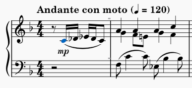
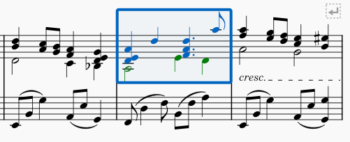
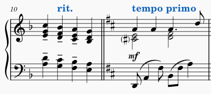
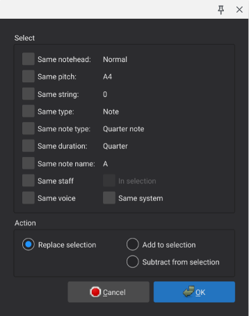
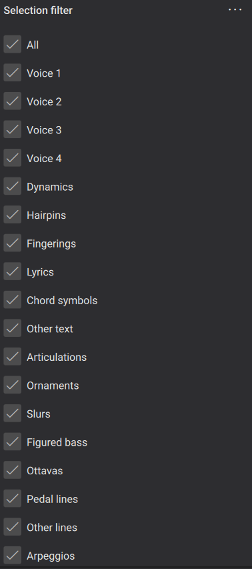

Selecting elements
You can select elements in MuseScore using the keyboard or mouse. Selections can consist of a single element, a list of individual elements that may possibly be discontinuous, or a range of measures and staves that includes the elements within it. Certain commands work only on single elements or lists; some work only on ranges; others work on any type of selection. The documentation for any given command should explain which types of selection are allowed.
When selected, elements display in blue (or whatever colour is defined for the voice the element belongs to).

For range selections, a blue rectangle appears around the entire range.

Selecting a single element
To select a single element with the mouse, simply click it.
To select a single element with the keyboard, use the cursor keys to navigate to the element. Note that there is no separate concept of a “cursor” in MuseScore that is separate from the selection, except while in Note Input mode. In Normal mode, the left and right cursor keys select elements one by one as you navigate, so even though there is technically not a cursor, the selection itself acts in a similar way.
By themselves, the cursor keys navigate through notes and rests only. When combined with Alt, they navigate through all elements, including articulation, dynamics, and other markings.
Notes
A note normally consists of multiple elements: the notehead, stem, flag, dot, accidental, etc. Most commands that operate on a single note expect you to select the notehead itself.
Chords
The notes of a chord share a single stem and flag. Even a single note can be considered a “chord” in the sense that it consists of these multiple elements.
To select a complete chord (all noteheads plus the stem and other elements), first make sure nothing is currently selected (you can press Esc to be sure) and then Shift+click the chord. This creates a range selection that encompasses the chord.\

Note that the selection may also include content in other voices if present, but see the section on excluding elements from range selections for information on how to avoid that if necessary.
Overlapping elements
If multiple elements overlap, clicking selects the topmost element. To select the element underneath a currently-selected element, Ctrl+click it. This deselects the currently-selected element and selects the next element beneath it, if any. Thus, repeated Ctrl+click operations cycle through a set of overlapping elements.
Selecting a list of individual elements
You can select a list of elements manually by selecting each individually or automatically by using commands to select elements that are similar to a given element.
Selecting multiple elements manually
To add an element to the list of selected elements, Ctrl+click it. If an element is already selected, Ctrl+click removes it from the list of selected elements.

You can also use Ctrl+click to add or remove individual elements from a range selection. In the process, this converts the selection into a list selection.
If the elements you wish to select are outside of the stave and clear of other elements, you may be able to create a list selection by using Shift+drag to draw a selection box around the desired elements. If any notes or rests are included, however, a range selection is performed instead.
Selecting similar elements automatically
To select all elements of a given type in the entire score or in a given stave:
- Right-click one such element
- In the resulting menu, click Select→Similar or Select→Similar on this stave as appropriate
To select all elements of a given type within a range:
- Click the first such element
Shift+click the last such element
—OR—
- Perform the range selection using the techniques described below
- Right-click one element within the range
- In the resulting menu, click Select→Similar in this range
To create more complex selections of similar elements:
- (Optional) Perform a range selection
- Right-click an element
- In the resulting menu, click Select→More
- Check the desired boxes within the resulting dialog (see below)
The options available in the select dialog will depend on the type of element you right-clicked.

The selection options specific to notes are:
- Same notehead: notes with the same notehead group (normal, cross, slash, etc.)
- Same pitch: notes with the same pitch name, accidental, and octave
- Same string: notes with the on the same string (tablature only)
- Same type: notes of the same type (normal, acciaccatura, appoggiatura)
- Same note type: notes of the same duration, not considering presence of dots or tuplets
- Same duration: notes of the same actual duration
- Same note name: notes with the same pitch name and accidental, not considering octave
- Same stave: notes in the same stave
- Same voice: notes in the same voice
- In selection: notes within the current selection
- Same system: notes in the same system
In addition to the type-specific selection options, there are action options at the bottom of the dialog that are common to all element types. These control what happens to the selected elements, and only one of these can be chosen at a time:
- Replace selection: if checked, this action selection replaces an existing selection
- Add to selection: if checked, this action adds elements to an existing selection
- Subtract from selection: if checked, this action removes elements from an existing selection
Selecting a range of measures and staves
A range selection includes all elements from a given beginning and ending time position across a given set of staves. It is the usual starting point for operations such as copy and paste.
Selecting a range by dragging
To select a range of measures and staves with the mouse alone, use Shift+drag to draw a rectangle around it. Note that this is only feasible for relatively small selections that fit on screen at once.
Selecting a range by clicking
A more flexible method for making selections uses a combination of mouse and keyboard:
- Click the first note or rest of the desired selection
Shift+click the last
In between the click and Shift+click, you can use navigation commands to position the score. This allows you make selections that span several pages.
This method works just as well if you first click the last note/rest then Shift+click the first.
Selecting a range using the keyboard
You can also make range selections using the keyboard alone or primarily:
- Select the first note or rest using keyboard navigation or by clicking
- Hold
Shiftwhile using keyboard navigation to extend the selection as you navigate
The available commands include:
Shift+LeftandShift+Rightto extend the selection one note or rest at a timeShift+Ctrl+LeftandShift+Ctrl+Rightto extend the selection one measure at a time (Mac: useCmdinstead ofCtrl)Shift+UpandShift+Downto extend the selection one stave at a timeShift+HomeandShift+Endto extend to the beginning or end of the systemShift+Ctrl+HomeandShift+Ctrl+Endto extend to the beginning or end of the score (Mac: useCmdinstead ofCtrl)
Special range selections
MuseScore includes some special commands to make command selections:
- Edit→Select all or
Ctrl+A(Mac:Cmd+A) to select the entire score - Edit→Select section to select the current section of the score (everything between the previous and next section breaks)
Excluding elements from a range selection
For certain operations involving range selections, you might want to exclude elements of a given type from the selection. For example, you may wish to copy the notes, rest, and most other markings in a phrase, but skip the lyrics. Or in a passage with multiple voices, you may wish to delete everything not in voice 1. To exclude elements of a given type from a range selection:
- Perform the range selection normally
- Open the Selection Filter with View→Selection filter
- Remove the checkmarks next to any element types you want excluded from the selection

Note that if you exclude voice 1, you will not be able to select any measures that lack content in other voices. So be sure to restore voice 1 after performing the operation for which you are excluding voice 1. For example, if you wish to copy and paste only voice 2, make your range selection, use the Selection Filter to exclude voice 1, use Edit→Copy or Ctrl+C, then restore the checkbox next to voice 1 before attempting to select the destination to paste.